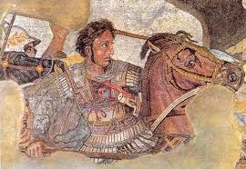

Bucephalus
This is the entry point for the
Bucephalus
document repository. No, it is not as pretty as sites I've made in the past, it's quick and functional and the text is in a serif font.
Things you can do
View by date.
Peruse by tag.
Examine by searching.
Behold by ID.